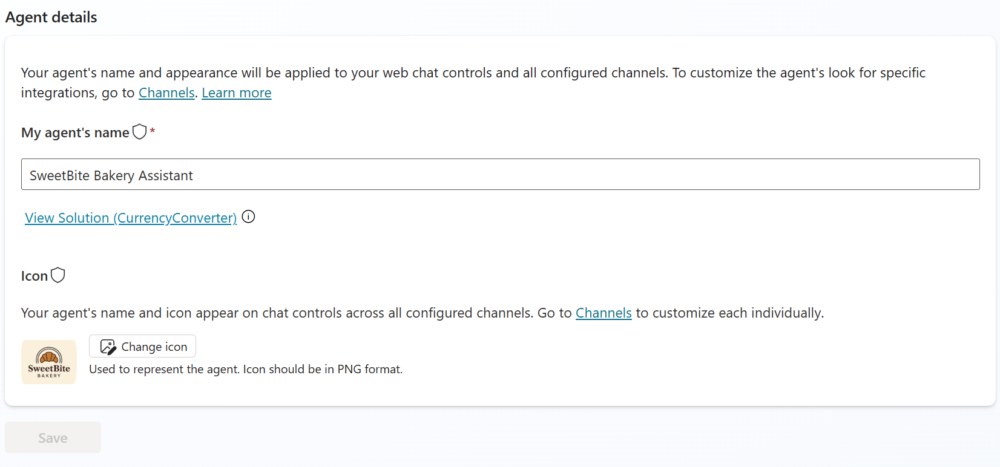
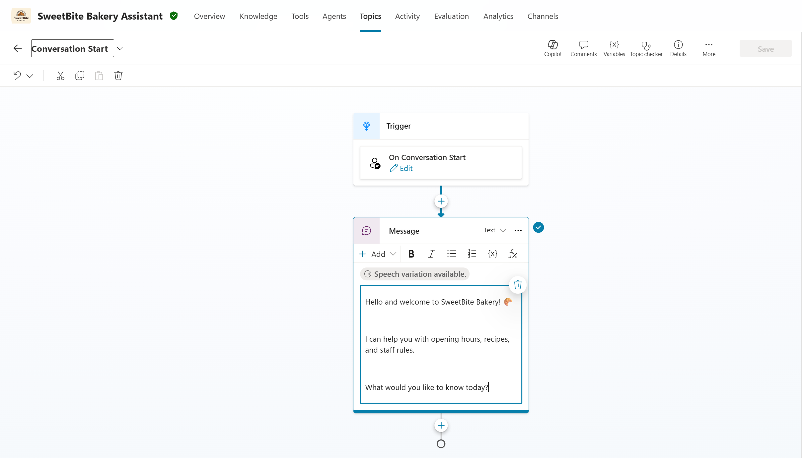

Lab 1 · ~45 minutes
Getting Started: Your First Bakery Agent
SweetBite Bakery staff get lots of calls about opening hours and bread types. Let’s create the bakery’s first agent to help customers.
🥖 What you’ll do
- Create a new agent
- Set its name, description, and icon
- Turn on Generative AI orchestration
- Change the welcome message
- Add bakery knowledge using a website
Step 1: Create a new agent
- Open Copilot Studio.
- In the left menu, click Agents.
- Click + Create blank Agent in the top-right corner.
-
In the creation wizard:
- Select Agent Settings.
-
Fill in:
- Name: SweetBite Bakery Assistant
- Language: English
- Solution: Leave as is.
- Schema Name: Leave as is.
- Team: Leave as is.
- Click Create.
Step 2: Change Agent Details and Icon
-
In the Overview page, update the description:
Helps with bakery recipes, opening hours, and staff policies
- In the Select your agent's model ensure your are using GPT-5.3 chat or newer.
- Click Settings in the top-right corner.
- In the left-hand menu, select Agent details.
-
Confirm the following:
- Name: SweetBite Bakery Assistant
-
Under Icon, click Change icon.
/data/bakery-icon.png
- Click Save.
Expected result

Step 3: Enable Generative Orchestration
- Still in Settings, click Generative AI.
-
Under Orchestration, select:
✅ Yes – Responses will be dynamic, using available tools and knowledge as appropriate.
- Close the settings window on the X in the top right
- Click Save.
Step 4: Change the welcome message
- Go to Topics (top navigation).
- Under System topics, open Conversation Start.
- On the canvas, edit the first Message node and replace the text with:
Hello and welcome to SweetBite Bakery! 🥐
I can help you with opening hours, recipes, and staff rules.
What would you like to know today?
- Click Save.
- Test the agent using the Test button.
Expected result

Step 5: Add bakery knowledge (website)
- Go to Overview.
- Scroll to Knowledge.
- Click + Add knowledge.
-
Select File Upload.
We use file upload because we do not have a live website URL with the information. -
Upload the file:
/data/Supplier_FAQ.html
- Click Add and wait for indexing.
Step 6: Test your agent
Use the Test your agent panel. Try prompts like:
- “When are you open?”
- “Do you sell gluten-free bread?”
- “Where can I buy ingredients for cakes?”
🎯 Checkpoint
- ✅ Created SweetBite Bakery Assistant
- ✅ Updated description and icon
- ✅ Turned on orchestration
- ✅ Customized welcome message
- ✅ Added website knowledge
- ✅ Tested in chat and demo site